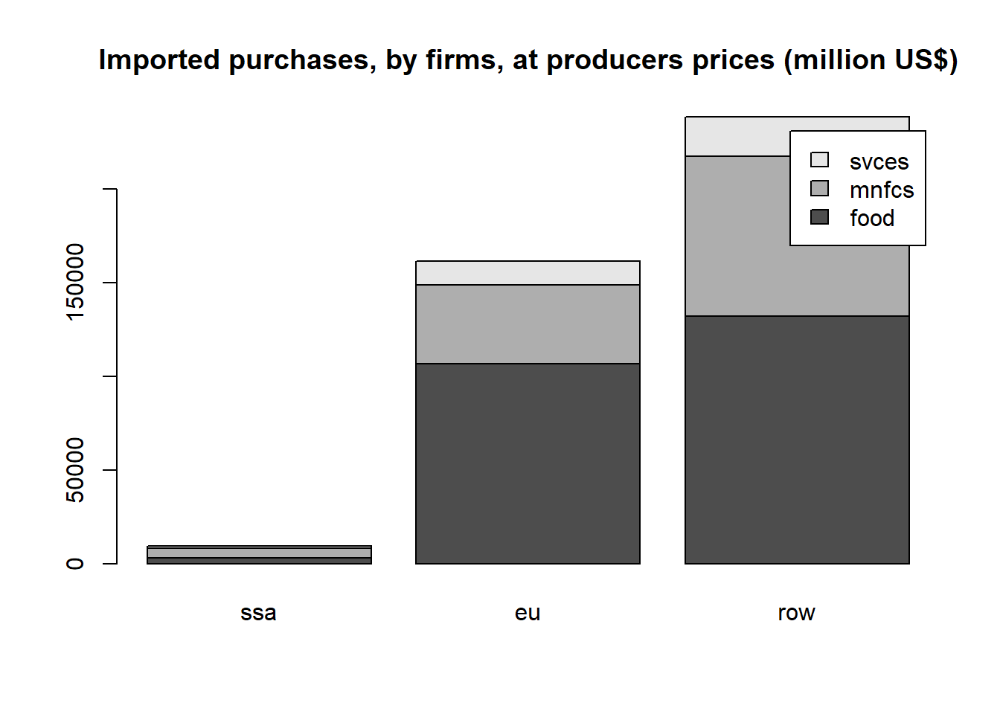
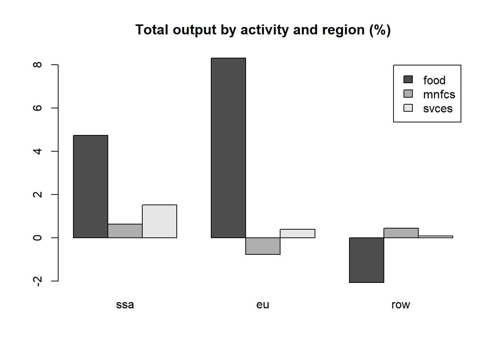
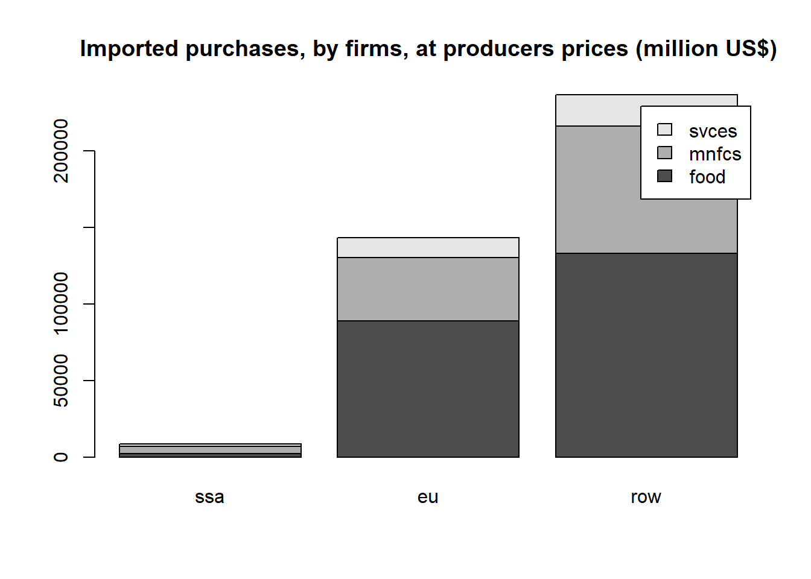

GTAPinR Course
1 Introduction
This course introduces new tools to work with GTAP model and database in R. It provides practical hands-on experience starting with the installation of the required packages in R, viewing .har files, setting up and running the standard GTAP model version 71 in R and exploring model outputs.
The key packages used in the course includes:
HARr package, which serves as a bridge between the databases and the R language by reading and writing .har files adopted in the GEMPACK suite.
TabloToR package allows users to run GTAP simulations by reading in and compiling the GEMPACK-style TABLO .tab files and solving it within the R environment2.
The diagram below summarizes the basic workflow for running GTAP in R. It starts with initializing the model, followed by configuring and reading in the database, model translation from TABLO to R, closure setup, and shock application. The process concludes with running the model to viewing results.
flowchart TD
A[Initialize] -->|"tabloToR::GEModel$new()"| EM{Model Outline}
EM --> |"model$loadTablo(gtapv7.tab)"| B{Gtapv7 Model}
EM --> |"model$loadData(database)"| B
H[Setup closure] -->|"exogenous_variables <- 0"| B
Z[Setup shocks] -->|"shock_variables <- X"| B
B --> |"model$solveModel()"| C[Get the results]
1.1 Setting Up
Make sure that you have R installed on your computer. You can download the latest version of R from the Comprehensive R Archive Network (CRAN).
After installing R, install RStudio, a powerful and user-friendly integrated development environment for R. RStudio can be downloaded from the official RStudio website.
Open the roadmap_gtapinr.r course folder using R studio. This is a blank R file. You will use this to copy/paste/write and run R codes that you will see throughout this course.
Set the working directory to the folder where the R file that you are editing is located. This is important since R will read the GTAP model file and database in the model subfolder. You can also manually set the working directory using the following codes:
#### Using R studio feature
setwd(dirname(rstudioapi::getActiveDocumentContext()$path))
#### Manually set working directory in R
setwd("D:/Daily_Work/2022 USDA GTAPinR/2024 GTAPinR newfiles/202403")
#### Check the working directory to ensure it is correctly set:
getwd()- Install devtools, TabloToR and HARr packages. You can install these packages using the following commands in R:
install.packages("devtools")
devtools::install_github('USDA-ERS/MTED-HARr')
devtools::install_github('tsimonato/MTED-TabloToR')1.2 A Brief Overview of Data Structures in R
R provides several data structures for handling data. Among the most commonly used are Data.frames, Arrays, and Lists. Each structure has its unique features and use cases.
A Data.frame is a table or a two-dimensional array-like structure in which each column contains values of one variable and each row contains one set of values from each column. Example of a Data.frame:
#### Creating a data.frame object in R
df <- data.frame(
Commodities = c("Wheat", "Corn", "Wheat", "Corn"),
Activities = c("Farming", "Farming", "Harvesting", "Harvesting"),
Margins = c("Low", "High", "Low", "High"),
Values = c(1, 2, 3, 4)
)
df.
Subsetting in a Data.frame can be done to select specific rows, columns, or both:
Here, we select rows where the Values column is greater than 2
#### Filter df$Values which are greater than 2
df[df$Values > 2, ] Commodities Activities Margins Values
3 Wheat Harvesting Low 3
4 Corn Harvesting High 4Here, we select the ‘Commodities’ column
#### Select the 'Commodities' column in 'df' data.frame
df$Commodities[1] "Wheat" "Corn" "Wheat" "Corn" Here, we select rows where ‘Values’ is greater than 2 and only the ‘Commodities’ and ‘Activities’ columns
#### Select rows where 'Values' is greater than 2 and only the 'Commodities' and 'Activities' columns in 'df' data.frame
df[df$Values > 2, c("Commodities", "Activities")] Commodities Activities
3 Wheat Harvesting
4 Corn HarvestingAn Array in R is a multi-dimensional data structure that can store data in more than two dimensions. Arrays are useful for performing mathematical operations on multi-dimensional data.
This is important since headers extracted from the .har files are treated as arrays in R.
Example of an Array:
#### Creating an array object in R
array_data <- array(df$Values, dim = c(2, 2, 2))
dimnames(array_data) <- list(
unique(df$Commodities),
unique(df$Activities),
unique(df$Margins)
)
array_data, , Low
Farming Harvesting
Wheat 1 3
Corn 2 4
, , High
Farming Harvesting
Wheat 1 3
Corn 2 4#### Subsetting data from an Array
array_subset <- array_data["Wheat", "Farming", ]
array_subset Low High
1 1 A List is a collection of elements that can be of different types and structures. You can think of a list as a container that holds a variety of objects, which can be accessed and manipulated individually.
Example of a List:
#### Creating a list object in R
list_data <- list(
Data_Frame = df,
Array = array_data,
Details = list(
Commodities = unique(df$Commodities),
Activities = unique(df$Activities),
Margins = unique(df$Margins)
)
)
list_data$Data_Frame
Commodities Activities Margins Values
1 Wheat Farming Low 1
2 Corn Farming High 2
3 Wheat Harvesting Low 3
4 Corn Harvesting High 4
$Array
, , Low
Farming Harvesting
Wheat 1 3
Corn 2 4
, , High
Farming Harvesting
Wheat 1 3
Corn 2 4
$Details
$Details$Commodities
[1] "Wheat" "Corn"
$Details$Activities
[1] "Farming" "Harvesting"
$Details$Margins
[1] "Low" "High"You can subset elements of a list using the $. For nested lists, you can chain these operators to access deeper levels.
#### Selecting data.frame within the list
list_data$Data_Frame Commodities Activities Margins Values
1 Wheat Farming Low 1
2 Corn Farming High 2
3 Wheat Harvesting Low 3
4 Corn Harvesting High 4#### Selecting data.frame$Commodities within the list
list_data$Data_Frame$Commodities[1] "Wheat" "Corn" "Wheat" "Corn" #### Selecting specific values in Array within the list
list_data$Array["Wheat", "Farming", "Low"][1] 12 Running GTAP in R
In this section, you will follow the step-by-step instructions to run GTAP simulations in R. You will learn how to do the following tasks: import and examine .har files in R, loading and initializing model inputs and model code within the R environment, executing simulations, and exploring the results.
2.1 Loading and exploring the GTAP Data Base
GEMPACK utilizes custom .har binary data files to store information. The R package HARr enables R to directly read these .har files. It converts the data in these headers, including set information, into a list of arrays, in which each array represents a header of the .har file.
In this step, you will write a script to read the GTAP basedata and explore specific headers within them. Specifically, you will extract and examine the header vdfb (Domestic purchases, by firms, at basic prices).
2.1.1 Loading the GTAP data files
In this step, you will learn how to load the GTAP model’s database files into R using the HARr package. This step is crucial as it sets the foundation for solving the model. You will focus on how to read .har files in a specific way and understand their structure within the R environment.
database list which reads in the GTAP basedata, parameters and set files in R
# Complete the code
# Create `database` list which reads in the GTAP basedata,
# parameters and set files in R
database = list(
gtapsets = HARr::read_har('??????')
gtapdata = HARr::read_har('??????')
gtapparm = HARr::read_har('??????')
)# Create `database` list which reads in the GTAP basedata,
# parameters and set files in R
database = list(
gtapsets = HARr::read_har('model\\sets.har'),
gtapdata = HARr::read_har('model\\basedata.har'),
gtapparm = HARr::read_har('model\\default.prm')
)The HARr package loads the .har files and stores them as array objects in R named *sets.har, default.prm, and basedata.har** into R and stores the files as a list named database, with keys gtapsets, gtapdata, and gtapparm respectively.
The name of each list must be the same as the files specified in the TABLO code, preferably in lowercase. If you open the gtapv7.tab, file you should see the following lines:
GTAPv7.tab, line 99:
...
File GTAPSETS # file with set specification #;
File GTAPDATA # file containing all Base Data #;
File GTAPPARM # file containing behavioral parameters #;
...2.1.2 Extracting Data in the GTAP Data Base
This task involves extracting specific headers from the loaded GTAP Data Base, with a focus on the vmfp header. You will learn how to filter this data by region and activity. This exercise will assist you to become familiar with the format and structure of the data used in these packages.
vmfp header in the database list
# Complete the code
# Extract and store 'vmfp' header as array object vmfp
vmfp <- database$??????$??????
vmfp# Extract and store 'vmfp' header as array object vmfp
vmfp <- database$gtapdata$vmfp
vmfp, , reg = ssa
acts
comm food mnfcs svces
food 3053.641 847.5477 699.6063
mnfcs 4988.493 21711.2031 13755.7686
svces 1352.623 2573.5461 5244.4595
, , reg = eu
acts
comm food mnfcs svces
food 106757.54 19543.31 21146.19
mnfcs 42000.44 729110.94 210368.31
svces 12873.86 67352.26 198928.09
, , reg = row
acts
comm food mnfcs svces
food 132265.84 38923.74 30186.41
mnfcs 85475.67 1269135.12 430168.25
svces 21010.39 74416.02 211477.12Recall in Task 1, you stored the .har files as a list named database, with keys gtapsets, gtapdata, and gtapparm respectively. You can then use R’s traditional sublist selector $ to subset lists and [,,] to subset the array in its 3 dimensions. Note that all characters in the database are in lower case, including the name of the headers.
To display the available headers in the database list, you can use the names() function in R. To view the number of dimensions and dimension names in an array you can use the dim() and dimnames() function in R
# Show headers gtapdata array
names(database$gtapdata)
# Show number of dimensions of vmfp array object
dim(vmfp)
# Show names of dimensions of vmfp array object
dimnames(vmfp) [1] "xxcr" "xxcd" "xxcp" "dver" "dpsm" "evfp" "evos" "save" "vosb" "vdep"
[11] "vdfp" "vdfb" "vdgp" "vdgb" "vdpp" "vdpb" "vdip" "vdib" "evfb" "vmfp"
[21] "vmfb" "vmgp" "vmgb" "vmpp" "vmpb" "vmip" "vmib" "vmsb" "vcif" "vkb"
[31] "vst" "vtwr" "vfob" "vxsb" "maks" "makb"
[1] 3 3 3
$comm
[1] "food" "mnfcs" "svces"
$acts
[1] "food" "mnfcs" "svces"
$reg
[1] "ssa" "eu" "row"food elements in acts set in vmfp array object
# Complete the code
# Filter for `food` elements in `acts` set in `vmfp` array object
vmfp_food <- database$gtapdata$vmfp['?????','?????','??????']
vmfp_food# Filter for `food` elements in `acts` set in `vmfp` array object
vmfp_food <- database$gtapdata$vmfp[,"food",]
vmfp_food reg
comm ssa eu row
food 3053.641 106757.54 132265.84
mnfcs 4988.493 42000.44 85475.67
svces 1352.623 12873.86 21010.39To filter an array, you need to know the number and order of its dimensions, in the case of vmfp: [comm,acts,reg]. To view the number of dimensions and dimension names in an array you can use the dim() and dimnames() function in R
# Show number of dimensions of vmfp array object
dim(vmfp)
# Show names of dimensions of vmfp array object
dimnames(vmfp)[1] 3 3 3
$comm
[1] "food" "mnfcs" "svces"
$acts
[1] "food" "mnfcs" "svces"
$reg
[1] "ssa" "eu" "row"2.1.3 Converting Data for Analysis
In this task, you will convert the extracted array data into a data.frame.table format using base R. This conversion is essential for making the data more accessible and easier to analyze using various R functions and packages like data.table, dplyr and tidyr.
vmfp array into a data.frame.table object
# Complete the code
# Convert the `vmfp` array into a `data.frame.table` object
vmfp_df <- as.?????(vmfp)
vmfp_df# Convert vmfp into data.frame.table
# Convert the `vmfp` array into a `data.frame.table` object
vmfp_df <- as.data.frame.table(vmfp)
vmfp_df comm acts reg Freq
1 food food ssa 3053.6409
2 mnfcs food ssa 4988.4932
3 svces food ssa 1352.6234
4 food mnfcs ssa 847.5477
5 mnfcs mnfcs ssa 21711.2031
6 svces mnfcs ssa 2573.5461
7 food svces ssa 699.6063
8 mnfcs svces ssa 13755.7686
9 svces svces ssa 5244.4595
10 food food eu 106757.5391
11 mnfcs food eu 42000.4375
12 svces food eu 12873.8594
13 food mnfcs eu 19543.3105
14 mnfcs mnfcs eu 729110.9375
15 svces mnfcs eu 67352.2578
16 food svces eu 21146.1855
17 mnfcs svces eu 210368.3125
18 svces svces eu 198928.0938
19 food food row 132265.8438
20 mnfcs food row 85475.6719
21 svces food row 21010.3945
22 food mnfcs row 38923.7422
23 mnfcs mnfcs row 1269135.1250
24 svces mnfcs row 74416.0156
25 food svces row 30186.4141
26 mnfcs svces row 430168.2500
27 svces svces row 211477.1250Arrays converted to data.frame through as.data.frame.table() function. Also, keep in mind that they have freq as the name of the column of numerical values.
2.1.4 Exploring the data
There are many options for exploring these databases in R. This can be useful for building a descriptive analysis of the database, identifying patterns, creating data dashboards and so on.
vmfp_food object using barplot() function
# Complete the code
# Plot vmfp_food using barplot() function in R
?????(
?????,
legend.text = rownames(vmfp_food),
main= "Imported purchases, by firms, at producers prices (million US$)"
)# Plot vmfp_food using barplot() function in R
barplot(
vmfp_food,
legend.text = rownames(vmfp_food),
main= "Imported purchases, by firms, at producers prices (million US$)"
)
2.2 Initializing the GTAP model file and database in R
In this step, you will convert the standard GTAP model file in the TABLO language into a format that R can understand using tabloToR. This requires setting the path to the model’s TABLO file, initializing a GEMModel object in R and assigning to this object the paths for the model and database files.
GEMModel object.
# Complete the code
# Note: The order of the code matters!
# Errors will occur if the order is wrong.
#
# Step 1. Initialize a new `GEModel` object using tabloToR package
model <- ?????::GEModel$new()
# Step 2. Assign model file
model$loadTablo(?????)
# Step 3. Assign model database
model$loadData(?????) # Note: The order of the code matters!
# Errors will occur if the order is wrong.
#
# Step 1. Initialize a new `GEModel` object using tabloToR package
model <- tabloToR::GEModel$new() #
# Step 2. Assign model file
model$loadTablo("model/GTAPv7.tab") #Loading required package: Matrix# Step 3. Assign model database
model$loadData(database) # The first step calls the function GEModel$new() which creates a new instance of the GEModel class. It is an empty object which represents the model, its inputs and outputs.
The second step calls the function loadTablo() which interprets a TABLO model and turns it into an R code inside the GEModel object. This is achieved through a process that interprets and translates different components of the model file such as statements like Read, Set, Coefficient, Variable, Formula, Equation, Parameter, Mapping, and so on. Each category of commands is handled in a specific way to ensure they are correctly represented in R. The correct labeling of each statement into its appropriate group is essential for the subsequent definition and construction of the matrix that will be inverted during the simulation. This precise organization is key to maintaining the integrity of the model’s structure and calculations as it transitions into the R environment.
The last step call the function loadData() which initializes the data that will be used by the GEModel object
Note that errors will occur if the sequence are not followed correctly.
2.3 Setup the model closure and shocks
In this step, you will focus on setting up the closure conditions and applying specific shocks to the model. The closure assigns which variables are endogenously calculated within the model and exogenously dictated outside the model. Once the closure is defined, you will define the vectors of shocks which are the changes to the model’s exogenous variables that simulate different scenarios, such as economic or policy changes.
# Complete the code
# Create character object in R which lists all exogenous variables
exogenous_variables <- c(
'afall', 'afcom', 'afeall', 'afecom', 'afereg', 'afesec', 'afreg',
'afsec', 'aintall', 'aintreg', 'aintsec', 'ams', 'aoall', 'aoreg',
'aosec', 'atall', 'atd', 'atf', 'atm', 'ats', 'au', 'avaall',
'avareg', 'avasec', 'cgdslack', 'dpgov', 'dppriv', 'dpsave',
'endwslack', 'incomeslack', 'pfactwld', '?????', 'profitslack',
'psaveslack', 'qe', 'qesf', 'tfd', 'tfe', 'tfm', 'tgd', 'tgm',
'tid', 'tim', 'tinc', 'tm', 'tms', 'to', 'tpdall', 'tpmall',
'tpreg', 'tradslack', 'tx', 'txs'
)# Create character object in R which lists all exogenous variables
exogenous_variables <- c(
'afall', 'afcom', 'afeall', 'afecom', 'afereg', 'afesec', 'afreg',
'afsec', 'aintall', 'aintreg', 'aintsec', 'ams', 'aoall', 'aoreg',
'aosec', 'atall', 'atd', 'atf', 'atm', 'ats', 'au', 'avaall',
'avareg', 'avasec', 'cgdslack', 'dpgov', 'dppriv', 'dpsave',
'endwslack', 'incomeslack', 'pfactwld', 'pop', 'profitslack',
'psaveslack', 'qe', 'qesf', 'tfd', 'tfe', 'tfm', 'tgd', 'tgm',
'tid', 'tim', 'tinc', 'tm', 'tms', 'to', 'tpdall', 'tpmall',
'tpreg', 'tradslack', 'tx', 'txs'
)GEModel object to zero
# Complete the code
# Loop statement to assign zero values to each exogenous
# variable in the GEModel object
for (var in ??????) {
?????$variableValues[[var]][] <- 0
}# Loop statement to assign zero values to each exogenous
# variable in the GEModel object
for (var in exogenous_variables) {
model$variableValues[[var]][] <- 0
}GEModel object
# Complete the code
# Assign 10% output augmenting productivity shock
# to 'food' sectors in 'ssa' and 'eu' regions in the GEModel object
?????$variableValues$?????["?????", "?????"] = 10
?????$variableValues$?????["?????", "?????"] = 10
?????$variableValues$?????# Assign 10% productivity shock to 'food' sectors in 'ssa' and 'eu' regions
# in the GEModel object
model$variableValues$aoall["food", "ssa"] = 10
model$variableValues$aoall["food", "eu"] = 10
model$variableValues$aoall reg
acts ssa eu row
food 10 10 0
mnfcs 0 0 0
svces 0 0 0Setting up the model closure requires identifying which variables are exogenous and then assigning zero values within the GEModel object using the variableValues() function. Use the loop function in R to efficiently assign zero values to all exogenous variables.
tabloToR automatically assigns other variables which are not shocked as endogenous variables.
When shocking variables for your simulations, you need to use the variableValues() function. Depending on the variable that you are shocking, you need to manually assign the indices (e.g. GTAP sector, endowment, region).
2.4 Solving the model and viewing model outputs
You are now ready to solve the model, bringing together all the elements that you have prepared: reading in and assigning GTAP model and database, defining model closure, and assigning shocks to key variables.
In this step, tabloToR solves the model’s matrix, which is a representation of the equations from the model. The model’s execution not only solves the matrix but also carries out the calculations defined in the model’s formulas. Post-simulation processes are also done (if they are defined in the model TABLO file) using the model’s output.
The default solution method is Euler3 method. This is a multi-step procedure that divides the exogenous shock into a (user-specified) number of equal components. In the current version, users can define the number of iterations and steps for only a two-step solution.
It is important to note that once the model is solved, the model’s data is also updated. This means that running the same solveModel()function again, will apply the shocks to the updated model data.
The model outputs are stored as an outputData object. The updated values of the basedata can be viewed by calling $data in GEModel object.
GEModel object using Euler method with 3 iterations and 1-step and 6-step solution
# Complete the code
# Solve the `GEModel` object using Euler with
# 3 iterations and 1-step and 6-step solution
?????$solveModel(
iter = ?????,
steps = c(?????,?????)
)# Solve the `GEModel` object using Euler with
# 3 iterations and 1-step and 6-step solution
model$solveModel(
iter = 3,
steps = c(1,6)
)Iteration 1/3Step set 1/2Step 1/1Step set 2/2Step 1/6Step 2/6Step 3/6Step 4/6Step 5/6Step 6/6Iteration 2/3Step set 1/2Step 1/1Step set 2/2Step 1/6Step 2/6Step 3/6Step 4/6Step 5/6Step 6/6Iteration 3/3Step set 1/2Step 1/1Step set 2/2Step 1/6Step 2/6Step 3/6Step 4/6Step 5/6Step 6/6# Complete the code
# Extract the percent changes in total output in each region and plot
plotdata = outputData$????
barplot(
plotdata,
beside = TRUE,
legend.text = rownames(plotdata),
main= "Total output by activity and region (%)"
)# Extract the percent changes in total output in each region and plot
plotdata = outputData$qo
barplot(
plotdata,
beside = TRUE,
legend.text = rownames(plotdata),
main= "Total output by activity and region (%)"
)
# Complete the code
# Extract the updated value of vmfp for the food sector
# from the `data` used by the GEModel object and plot
vmfp_food <- ?????$?????$vmfp[,"food",]
vmfp_food
barplot(
vmfp_food,
legend.text = rownames(vmfp_food),
main= "Imported purchases, by firms, at producers prices (million US$)"
)# Extract the updated value of vmfp for the food sector
# from the `data` used by the GEModel object and plot
vmfp_food <- model$data$vmfp[,"food",]
vmfp_food reg
comm ssa eu row
food 2386.668 88820.96 132952.64
mnfcs 4764.728 41639.26 83289.94
svces 1295.402 12767.90 20467.17barplot(
vmfp_food,
legend.text = rownames(vmfp_food),
main= "Imported purchases, by firms, at producers prices (million US$)"
)
3 FAQ
For common questions and answers, please visit the FAQ page.
Footnotes
Corong, E. L., Hertel, T. W., McDougall, R., Tsigas, M. E., & van der Mensbrugghe, D. (2017). The Standard GTAP Model, Version 7. Journal of Global Economic Analysis, 2(1), 1–119. https://doi.org/10.21642/JGEA.020101AF↩︎
Ivanic, M. (2023). GEMPACK simulations in R: A demonstration of running the GTAP model and processing its results entirely in R using packages HARr and tabloToR. Journal of Global Economic Analysis, 8(1). https://doi.org/10.21642/JGEA.080101AF↩︎
https://www.copsmodels.com/webhelp/rungtap/index.html?hc_solmethod.htm↩︎